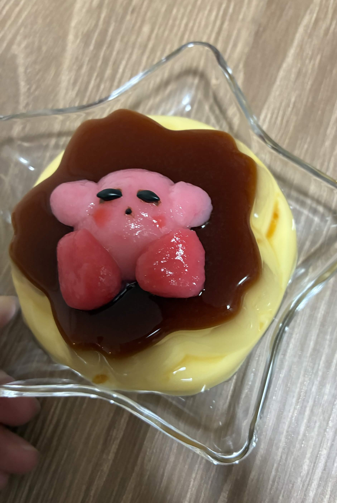

- Q. 入部のきっかけを教えてください
- 長期休暇中に旅行に行っているのが楽しそうだったから。みんなの雰囲気が良かったから。
- Q. 同好会の好きなところは？
- 雰囲気が穏やかでいいところ。普段飲まないようなお茶を飲めるところ。
- Q. 印象に残っている活動は？
- 今年の新歓で行った茶摘み！普段飲んでいるお茶がどのように収穫されているか知れて楽しかった！
- Q. どんな人におすすめですか？
- 大学生になって新たな趣味が欲しい人にオススメです
- Q. 最後に一言お願いします
- お茶のある大学生活を送りましょう！！

- Q. 入部のきっかけを教えてください
- 掲示板で日本茶同好会の掲示を見て興味を持ったから。新歓が面白かったから。
- Q. 同好会の好きなところは？
- 同交会全体の雰囲気が優しく、入っている人たちも優しいのでとっても仲が良いところ！！
- Q. 印象に残っている活動は？
- 一年次の九大祭！実際にお客さんに説明しながらお茶を淹れる体験が新鮮で、楽しかった！！
- Q. どんな人におすすめですか？
- お茶を飲んでほっと一息つきたい、落ち着いた雰囲気が好きな人にオススメ
- Q. 最後に一言お願いします
- お茶に少しでも興味があれば、新歓にぜひおいでください！
- Q. 創部のきっかけを教えてください
- お茶に興味がある大学生がいるのか知りたかったから。
- Q. 同好会の好きなところは？
- お茶という飲み物を中心に様々な背景を持つ人が集い，その中でも同じ目標に向かって
- Q. 印象に残っている活動は？
- 大牟田中央小学校５年生の家庭科の授業でお茶の芳香園様と一緒に行ったお茶育の授業。茶文化を未来に継承したいという思いが一つ叶った瞬間で今でも心に残っています。
- Q. どんな人におすすめですか？
- お茶に詳しくなりたい人・大学生で何か社会貢献をしてみたい人
- Q. 最後に一言お願いします
- お茶の世界はめちゃくちゃ深いです。たかがお茶されどお茶。ぜひお茶に興味がある学生とお茶の世界を探検し一生の趣味を見つけてみませんか？